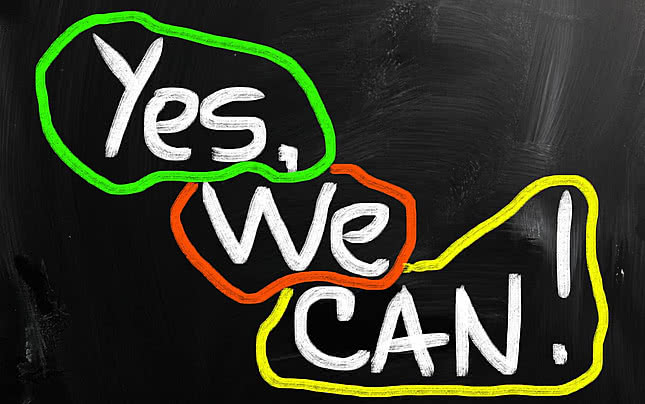

بحث طبي
دراسة في مجال الطب والعلاج المتقدم
دراسة شاملة في مجال الطب والعلاج المتقدم، تهدف إلى تحسين جودة الرعاية الصحية وتطوير أساليب العلاج الحديثة...
مشروع إسلامي
منصة تعليمية للدراسات الإسلامية
منصة متكاملة للدراسات الإسلامية تقدم محتوى تعليمي عالي الجودة مع أدوات تفاعلية للطلاب والمهتمين...
إبداع فني
مجموعة تصاميم إبداعية مبتكرة
مجموعة من التصاميم الإبداعية التي تجمع بين الفن والوظيفة، من الرسوم الرقمية إلى التصاميم المعمارية...
استشارة متقدمة
خدمات استشارية متخصصة في مجال الهندسة
خدمات استشارية متخصصة تقدم حلولاً مبتكرة للمشاريع الهندسية المعقدة، مع ضمان الجودة والكفاءة...

فيديو مميز
فيديو تحفيزي إبداعي
فيديو تحفيزي يلمس القلب ويشعل الحماس، من التصميم إلى الإخراج النهائي، مع رسالة قوية ومؤثرة...
مبتكر
مشروع مبتكر لحلول الطاقة المستدامة
مشروع مبتكر يهدف إلى تطوير حلول طاقة مستدامة ومتجددة، مع التركيز على الكفاءة والتكلفة المنخفضة...